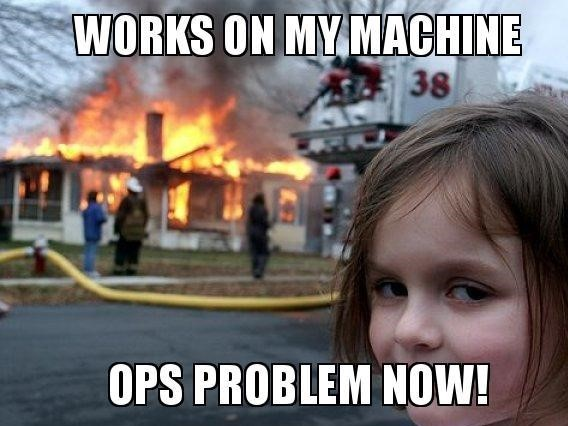
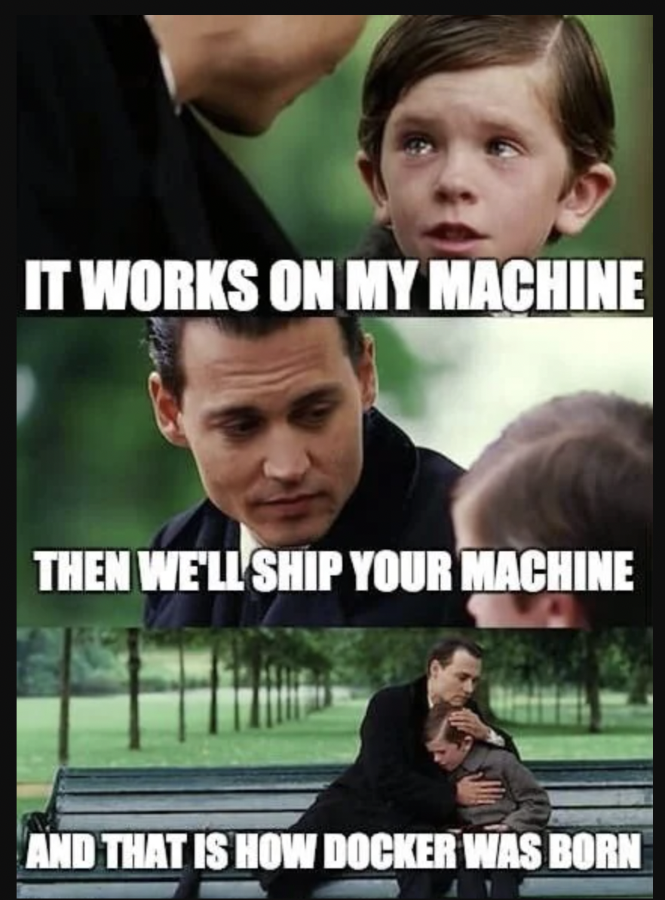
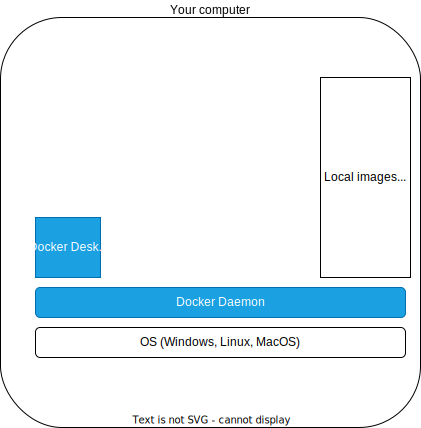
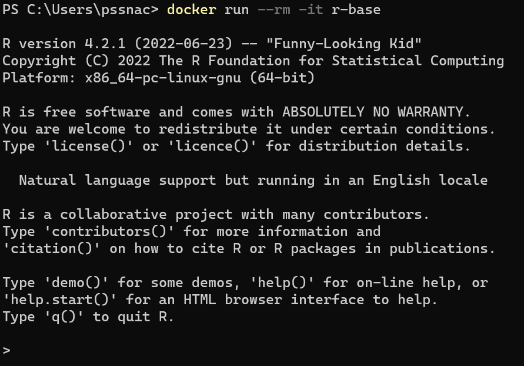
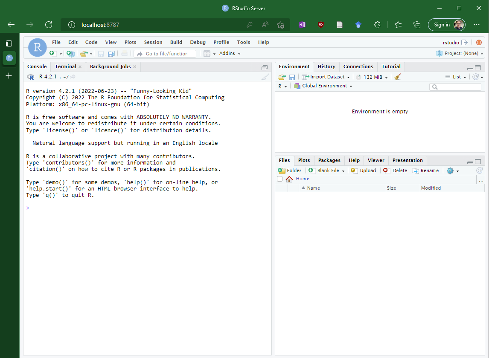
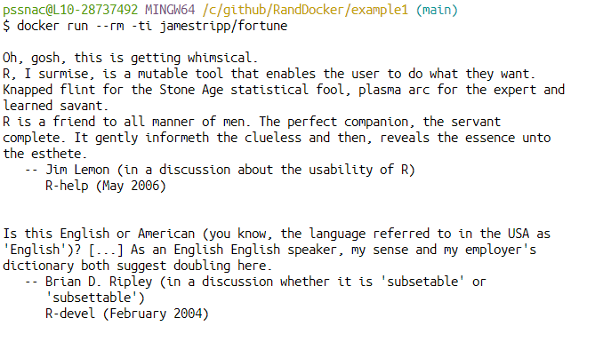
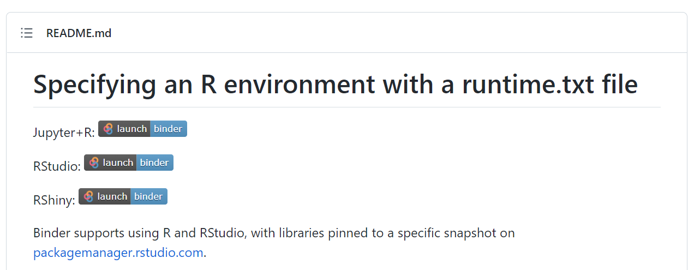

R and Docker
Warwick R User Group
James Tripp
Senior Research Software Engineer, IT Services (University of Warwick)
Who am I?
- Researcher in Cognitive Science
- Senior Academic Technologist @ Interdisciplinary Centre
- Senior Research Software Engineer @ IT Services
Plan
- Why?
- Docker?
- Next Steps
Why?
Developers
- Software developers sometimes wrote code which only ran on their machine
- That could be a problem

Developers
Developers
- Developers could build and update images
- Images are stored in a registry
- Production servers download images
- Copies of these images called containers are used in production
Researchers
How does this help research?
- Aids computational reproducibility (Boettiger 2015)
- Allows other to run code without having to install lots of dependencies (Eglen et al. 2017)
- Language agnostic and used widely (Pittard and Li 2020)
- Provides the basis for technologies like the research compendium (Marwick, Boettiger, and Mullen 2018), binder (“Get Started with Binder Binder 0.1b Documentation,” n.d.) and dev containers (Smith 2022)
Docker
What?
What?

What?

What?

What?

What?

R images on DockerHub
- The R project has an official r-base image
- Rocker Project has lots of images:
- rocker/r-ver - alternative to r-base
- rocker/rstudio - R and RStudio
- rocker/tidyverse- R and tidyverse packages
- rocker/shiny - Shiny server built in
- many othersBase image
To use the official image

The r-base image downloaded
Container created from image
Terminal enters container
The command line options are to remove the container on exit (-rm) and to create a command line interface with interactivity (-ti)
RStudio image

Downloads image, creates and terminal enters container
The container provides access to RStudio via localhost:8787
You now have an isolated RStudio container running
Command line options are remove the container on exit (-rm), create a command line interface (-ti), set environment variables (-e) and set the port (-p) so that connecting via port 8787 will connect to port 8787 in the container.
Custom images
- Docker images are created from dockerfiles. A sample dockerfile is below1.
- To build the image, go to the folder containing the dockerfile and run.
Local files
- Copying files when the image is created. Baked into the image.
FROM r-base
COPY . /usr/local/src/myscripts
WORKDIR /usr/local/src/myscripts
CMD ["Rscript", "myscript.R"]- Volumes are folders on your local file system which are accessible to a container
# MacOS and Linux
docker run --rm -ti -e DISABLE_AUTH="true" -p 8787:8787 -v $(pwd):/home/rstudio/data rocker/rstudio
# Windows
docker run --rm -ti -e DISABLE_AUTH="true" -p 8787:8787 -v absolute_path:/home/rstudio/data rocker/rstudio
#May work on Windows
docker run --rm -ti -e DISABLE_AUTH="true" -p 8787:8787 -v %cd%:/home/rstudio/data rocker/rstudioWhere absolute_path is the full Windows path
Example
Fortune
myscript.R
dockerfile
FROM r-base
COPY . /usr/local/src/myscripts
WORKDIR /usr/local/src/myscripts
RUN ["install2.r", "fortune"]
CMD ["Rscript", "myscript.R"]Build and run it
Fortune
Other examples
To consider
- Changes in the base image can influence the images build upon them
- Ensure you use trustworthy images such as Rocker (Boettiger and Eddelbuettel 2017)
- Smaller images with very little software may be preferable as these are easier to maintain (Gruening et al. 2019a)
- Containers are, perhaps, only part of a reproducible workflow(Mölder et al. 2021; Gruening et al. 2019b)
- Do we need to replicate the entire computing environment? Perhaps automagic or renv, which captures the R version and libraries, is all we need… (see the previous WRUG presentation by Carlos Camara Menoyo)
Next steps
Learning materials
- Look through the R Blogger posts on Docker
- Read through the docker section in the DevOps for Data Science book
Papers
- Some R packages are mentioned in Nüst, Eddelbuettel, et al. (2020). I was not able to get these packages working
Stevedore - Sends commands to Docker. Required reticulate and the Python docker module. Recieved the error ‘Did not find required python module ’docker’’. Issue reported and not addressed in the past year…
Dockyard - Aims to help you create and run a container. Last commit was 3 years ago and the example code on the github page does not work…
Dockermachine - Last updated 5 years ago.
- Nüst, Sochat, et al. (2020) outlines 10 rules for creating dockerfiles, talks about good practice and sign posts other tools
Peikert and Brandmaier (2021) offer a workflow for rendering markdown documents which includes a make file for dependencies
Not an exhaustive list
Tools
Run a docker container on a remote server. Place a button on your public github repo README.md.

Questions?
References
https://jamestripp.github.io/RandDocker/